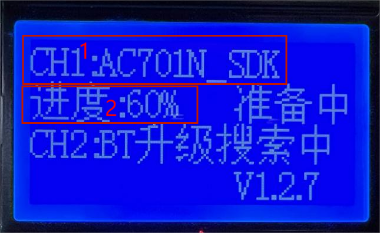
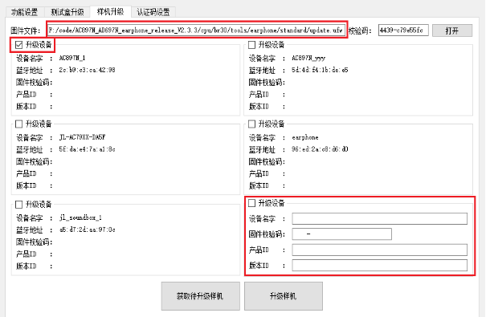
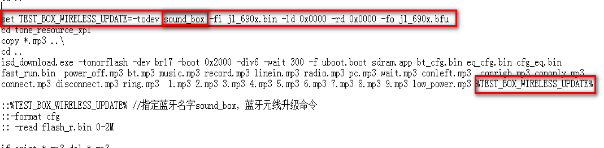
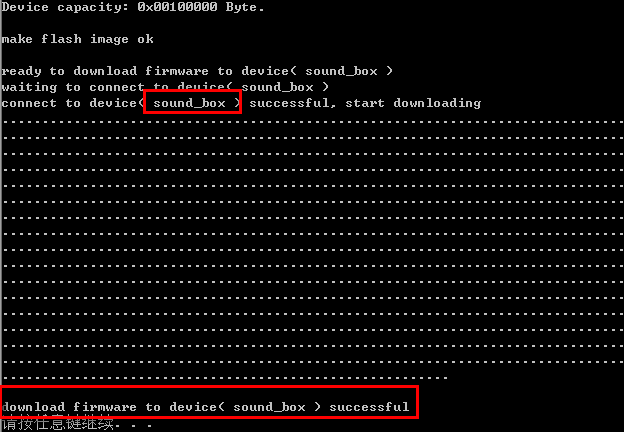

3.4. Wireless Upgrade of Bluetooth Devices
3.4.1. Online wireless upgrade
Method 1: wireless upgrade of devices from an SD card
1. Use the configuration tool to set the name of the target devices to connect to, so that the box does not connect to other devices and brick them with the upgrade
2. Insert the SD card containing the bfu or ufw file into the card slot of the test box
3. The upgrade starts as soon as a device is connected; both the device firmware and the device's Bluetooth name can be upgraded
4. 1: device Bluetooth name; 2: upgrade progress. When the upgrade is finished, a double beep is played, and the box then starts searching for the next device

Note
If the test box loses power or an error occurs during the upgrade, the device being upgraded can still be found and upgraded again (devices support re-upgrade; the Bluetooth name for re-upgrade is BT_UPDATA, and all ac690x series chips support this)
Ac690x_sdk_211 and later versions support refusing the upgrade when the KEY differs; the test box shows the corresponding error during the upgrade.
Method 2: wireless upgrade of devices over Bluetooth from the PC (convenient for developing and debugging devices without a USB port) 1. Press and hold button 4 and plug in the PC slave cable to enter configuration mode. (Follow the configuration procedure above.)
2. Go to the "Device upgrade" (样机升级) section. As shown in the figure below, 5 devices to be upgraded are listed (with their Bluetooth names and addresses). The test box dynamically searches for nearby Bluetooth devices; click the Get devices to upgrade (获取待升级样机) button to refresh the device list. Check the devices to upgrade and open the bfu or ufw file to upgrade with. Then click Upgrade devices (升级样机).

3. You can also search for and upgrade devices with a specified Bluetooth name: check "Upgrade devices by name" (根据名字升级设备) as shown in the figure above, enter the Bluetooth name of the devices to upgrade, open the bfu file and click "Upgrade" (升级). During the upgrade, "Upgrading" (升级中) is displayed; please wait.
4. Alternatively, you can modify download.bat in the device project directly and specify the Bluetooth name of the devices to upgrade with a parameter. Modify download.bat as shown in the figure below, then click download.bat to download. (You need to update isd_download.exe in the device project; this works only if isd_download.exe supports the parameter.)
As shown below, the Bluetooth name of the devices to upgrade is: sound_box
Add the following parameter to the download command line: %TEST_BOX_WIRELESS_UPDATE%
Without this parameter: normal download. With this parameter: the device is upgraded wirelessly through the 1-to-2 test box
Configure it as shown in the figure Modifying download.bat.

Modifying download.bat
The result is shown in the figure Wireless upgrade success message.

Wireless upgrade success message
Note
If the test box loses power or an error occurs during the upgrade, the device being upgraded can still be found and upgraded again (devices support re-upgrade; the Bluetooth name for re-upgrade must be changed to BT_UPDATA, and all ac690x series chips support this)
5. During the upgrade, the test box screen shows the name of the device being upgraded and the progress. On success, the PC tool pops up a "PC upgrade successful" (pc升级成功) message; on error, the corresponding error message pops up. AC690x_sdk_211 and later support refusing the upgrade when the KEY differs; the test box shows the corresponding error during the upgrade.
3.4.2. Offline wireless upgrade (using a TF card)
If you do not want to connect to a PC with a USB data cable to perform an online wireless upgrade with the .ufw file,
you can follow the section "Batch wireless upgrade of Bluetooth devices": insert a TF card containing the upgrade file (such as *.bfu or *.ufw) into the TF card slot on the left side of the test box to upgrade the Bluetooth device firmware.